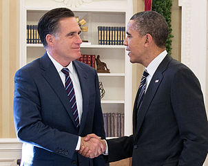

The U.S. presidential election of 2012 was the 57th quadrennial presidential election. It was held on Tuesday, November 6, 2012. The Democratic nominee, incumbent President Barack Obama, and his running mate, Vice President Joe Biden, were re-elected to a second term, defeating the Republican nominee, former Governor of Massachusetts Mitt Romney, and his running mate, Representative Paul Ryan of Wisconsin.
Obama would go on to win a decisive victory over Romney, winning both the popular vote and the electoral college, with 332 electoral votes to Romney's 206. He became the eleventh President and third Democrat to win a majority of the popular vote more than once.
Former Massachusetts Gov. Mitt Romney and President Barack Obama talk in the Oval Office following their lunch, Nov. 29, 2012. (Official White House Photo by Pete Souza)
Source: Wikipedia
| Nominee | Barack Obama | Mitt Romney |
|---|---|---|
| Party | Democratic | Republican |
| Home State | Illinois | Massachusetts |
| Running Mate | Joe Biden | Paul Ryan |
| Electoral Votes | 332 | 206 |
| States Carried | 26 (& D.C.) | 24 |
| Popular Vote | 65,915,796 | 60,933,500 |
| Percentage | 51.1% | 47.2% |
| Web Site | barackobama.com | mittromney.com |
© 2016. All Rights Reserved.